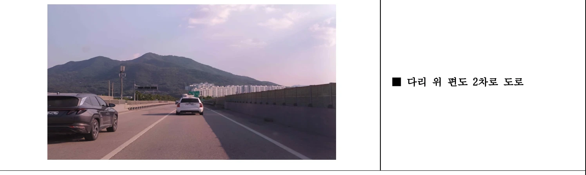

722. 다음 상황에서 가장 안전한 운전방법 2가지는?

- ①앞지르기를 하려면 좌측 차로에서 진행하는 승용차가 지나간 후 안전하게 좌측 차로로 앞지르기한다.
- ②다리 위 도로에서는 주차할 수 없다.
- ③2차로에서 1차로로 차로를 변경하여 진행할 수 있다.
- ④다리 위 도로에서는 앞지르기할 수 없다.
- ⑤전방 차량이 저속으로 진행하는 경우 앞 차량의 뒤쪽에 바싹 붙어 진행한다.
정답 보기
정답
② 다리 위 도로에서는 주차할 수 없다.
④ 다리 위 도로에서는 앞지르기할 수 없다.
근거·해설
사진 속 장소는 다리 위 도로 구간으로, 앞지르기 금지 장소에 해당한다(도로교통법 제22조 제3항). 따라서 좌측 차로의 차량이 지나간 후에도 앞지르기를 시도해서는 안된다. 또한 좌측이 백색 실선으로 표시되어 있어 진로변경 이 금지되어 있으므로 2차로에서 1차로로의 차로 변경 역시 불가하다(도로교통법 제14조 제5항). 반면 터널안 및 다리 위에서는 주차를 금지하고 있다(도로교통법 제33조). 따라서 가장 안전한 운전 방법은 다리 위에서는 주차하 지 않는 것(②)과 앞지르기를 하지 않는 것(④)이다.